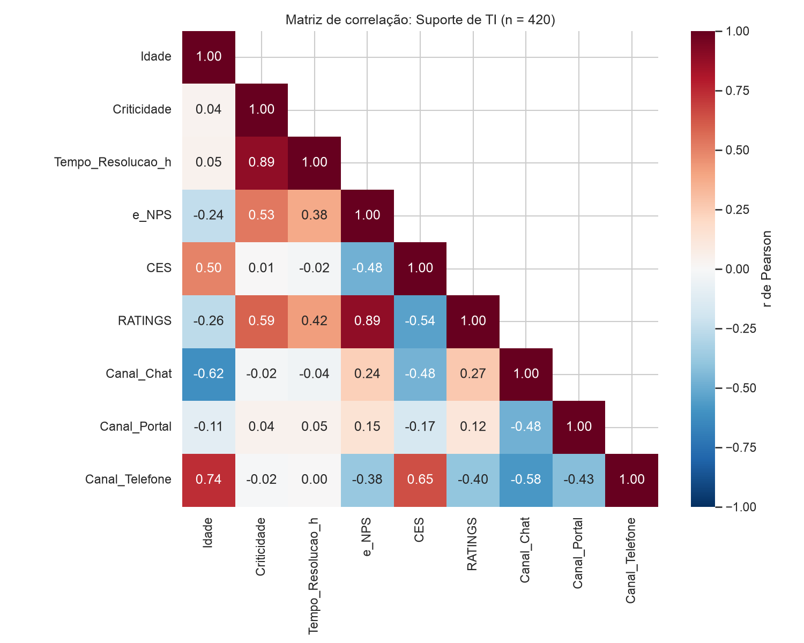

Caderno_de_Hipoteses_CX_preenchido
Fonte:
Aulas/AI-Core-Concepts/04_Hands_On_Correlacao/entrega/Caderno_de_Hipoteses_CX_preenchido.docx
SHA-256:f05768711383fd3d0f5ed1e04ab663d12a39bed15c6e9e0d2a278fd9b20be061
Conversão do DOCX com títulos, listas, tabelas e imagens incorporadas. A paginação original não é preservada.
Material do acervo acadêmico fornecido pelo usuário. Autoria e direitos permanecem com os titulares indicados na fonte.
HANDS ON · CORRELAÇÃO ESTATÍSTICA
Caderno de Hipóteses
Preencham em grupo, na ordem das etapas, e exportem em PDF para subir no portal. O uso de IA está liberado em todas as etapas, exceto na Etapa 1. Hipótese que cai não é erro: faz parte do processo.
00 IDENTIFICAÇÃO DO GRUPO
| RM | Nome |
|---|---|
Ferramenta(s) de IA usada(s):
Claude (Anthropic, via Claude Code no VS Code): interpretação da matriz e sugestão de hipóteses. Python (pandas, seaborn): cálculo da correlação de Pearson e Spearman e dos gráficos. |
|---|
Base analisada: metrica_cx_corr_v2.csv
01 HIPÓTESES ANTES DOS DADOS
10 minutos · sem IA
Sem abrir a base, apenas pelo dicionário de dados: o que a experiência de vocês como gestores diz que vai aparecer? Registrem agora; vocês vão confrontar isso com os dados na Etapa 4.
| # | O que esperamos encontrar | Por que acreditamos nisso |
|---|---|---|
| 1 | ||
| 2 | ||
| 3 |
02 MATRIZ DE CORRELAÇÃO E LEITURAS
15 minutos · IA liberada
Antes da matriz, olhem os dados. Mínimo, máximo, valores estranhos, colunas que não variam. O que chamou atenção?
• 420 respostas; nenhum valor faltante. • Id: identificador, fica fora da matriz. • Status_Chamado = "Resolvido" em 100% das linhas: coluna que não varia, fica fora da matriz. • Age: 5 registros com idade 0 (Ids 17, 286, 297, 320, 413), provável erro de cadastro. Tratados como ausentes. Sem eles, a idade vai de 19 a 67 anos. • Tempo_Resolucao_h: de 1,1 h a 71,7 h. Média de 15,9 h, bem acima da mediana de 7,7 h (cauda longa de chamados demorados). • Distribuição: Baixa 52%, Média 30%, Alta 19% | Chat 40%, Telefone 34%, Portal 26%. • Canal e Criticidade são texto. Criticidade virou escala 1-2-3 e Canal virou 3 colunas 0/1. |
|---|
Captura da matriz de correlação (colem a imagem aqui)
 |
|---|
Listem as correlações maiores que 0,4 ou menores que -0,4. Na coluna "Leitura", escrevam apenas o que o número diz, sem explicar o porquê. Exemplo: "quando X sobe, Y tende a cair".
| Par de variáveis | Coeficiente | Leitura |
|---|---|---|
| e_NPS × RATINGS | +0,89 | Quando a nota de satisfação sobe, a disposição em recomendar também sobe. |
| Criticidade × Tempo_Resolucao_h | +0,89 | Quanto maior a criticidade, maior o tempo de resolução. |
| Age × Canal Telefone | +0,74 | Quanto maior a idade, maior a presença no canal Telefone. |
| CES × Canal Telefone | +0,65 | Atendimentos por telefone tendem a ter CES (esforço) mais alto. |
| Age × Canal Chat | −0,62 | Quanto maior a idade, menor o uso do Chat. |
| Criticidade × RATINGS | +0,59 | Quanto maior a criticidade, maior tende a ser a nota de satisfação. |
| CES × RATINGS | −0,54 | Quando o esforço sobe, a satisfação tende a cair. |
| Criticidade × e_NPS | +0,53 | Quanto maior a criticidade, maior tende a ser o e_NPS. |
| Age × CES | +0,50 | Quanto maior a idade, maior tende a ser o esforço relatado. |
| e_NPS × CES | −0,48 | Quando o esforço sobe, a disposição em recomendar tende a cair. |
| CES × Canal Chat | −0,48 | Atendimentos por chat tendem a ter CES (esforço) mais baixo. |
| Tempo_Resolucao_h × RATINGS | +0,42 | Quanto maior o tempo de resolução, maior tende a ser a nota (no agregado). |
Quais colunas da base ficaram fora da matriz? O que elas poderiam explicar?
• Status_Chamado ficou fora porque é constante: só temos chamados resolvidos. Poderia explicar a satisfação de quem ficou sem solução (chamados abertos, cancelados ou reabertos). A pesquisa tem viés de seleção: só ouve quem foi atendido até o fim. • Id ficou fora por ser identificador. Se tivesse data, permitiria ver sazonalidade e tendência. • Canal e Criticidade só entram depois de convertidas em números. Os pares Canal × Canal (ex.: Chat × Telefone −0,58) foram ignorados, porque são negativos por construção (cada chamado tem um único canal). • Variáveis que NÃO existem e fazem falta: técnico ou nível (N1/N2/N3), SLA contratado, nº de transferências e reaberturas, área do colaborador. Elas poderiam explicar por que o crítico demora mais e é mais bem avaliado. • AUSÊNCIAS de correlação que também são informação: Criticidade × CES (0,01) e Tempo × CES (−0,02). O esforço do colaborador NÃO depende da gravidade nem da demora do chamado, e sim do canal. Criticidade × Canal (~0): chamados críticos não se concentram em nenhum canal. |
|---|
03 AUDITORIA DA IA
10 minutos
Peçam à IA que interprete a matriz e sugira hipóteses. Depois, auditem cada afirmação como se ela viesse de um analista júnior da sua squad.
Prompt usado:
| "Você é um analista de dados. Aplique correlação estatística (Pearson) na base metrica_cx_corr_v2.csv (pesquisa interna de satisfação do Suporte de TI). Liste as correlações maiores que 0,4 ou menores que -0,4, interprete a matriz e sugira hipóteses para o diretor de Suporte." |
|---|
Classifiquem cada afirmação: Constatação (descreve o número), Hipótese (explicação que ainda precisa ser testada) ou Causal indevida (afirma causa sem evidência).
| Afirmação da IA (resumida) | Classificação | Concordamos? Por quê? |
|---|---|---|
| e_NPS e RATINGS têm correlação forte e positiva (0,89). | Constatação | Sim. Descreve o número. Com Spearman (mais adequado para escalas de 1 a 5) o valor se mantém: 0,90. |
| Chamados que demoram mais geram colaboradores mais satisfeitos (tempo × RATINGS = +0,42). | Causal indevida | Não. Separando por criticidade, a relação inverte: dentro de cada nível, mais tempo = MENOS satisfação (r de −0,49 a −0,57). É um Paradoxo de Simpson. A criticidade é a variável omitida. |
| Colaboradores mais velhos têm mais dificuldade: a idade aumenta o esforço (CES). | Causal indevida | Não. Controlando pelo canal, a idade quase não muda o CES (Telefone ≈ 3,7-3,9 em todas as faixas). A idade leva ao telefone, e o telefone é que tem mais esforço. |
| O canal Telefone está associado a maior esforço e menor satisfação. | Hipótese | Sim, como hipótese. CES médio 3,75 (vs. 2,2 no Chat) e RATINGS 2,4 (vs. 3,6). Falta medir espera, URA e transferências para explicar o porquê. |
| Chamados críticos são mais bem avaliados porque recebem técnicos mais seniores. | Causal indevida | Parcialmente. A correlação existe (+0,59), mas a base não tem a variável técnico ou nível. É uma hipótese plausível apresentada como fato. Precisa de dados de N1/N2/N3 para validar. |
| Chamados de alta criticidade demoram cerca de 10× mais (48 h vs. 4,5 h). | Constatação | Sim, é o número. Mas a IA não perguntou se isso cumpre o SLA. O esperado seria o crítico ser priorizado. |
O que a IA deixou de questionar?
• As 5 idades iguais a 0 (erro de cadastro), que distorcem as correlações com Age. • Que Status_Chamado é constante: a pesquisa só ouve chamados resolvidos (viés de seleção / sobrevivência). • Que as correlações Canal × Canal são artefato da codificação. • Que Pearson assume relação linear entre variáveis contínuas, e CES, RATINGS e e_NPS são escalas ordinais. Checamos com Spearman: tudo se mantém, exceto Tempo × RATINGS, que cai para 0,37 (abaixo do corte). • A variável omitida criticidade por trás de Tempo × Satisfação (Paradoxo de Simpson). • Se o tempo dos chamados críticos (48 h) está dentro do SLA. |
|---|
04 CADERNO DE HIPÓTESES FINAL
As hipóteses que o grupo mantém depois de confrontar a Etapa 1 com os dados e com a auditoria. Na coluna "Etapa 1", indiquem se a hipótese confirma, contradiz ou é nova em relação ao que vocês esperavam.
| # | Hipótese | Correlação que sustenta | Etapa 1: confirma, contradiz ou nova | Viés ou variável omitida possível | Como validaríamos |
|---|---|---|---|---|---|
| 1 | Reduzir o tempo de resolução aumenta a satisfação em todos os níveis de criticidade. | Tempo × RATINGS dentro de cada criticidade: −0,49 a −0,57 (no agregado, +0,42 enganoso) | Criticidade (variável omitida que inverte o sinal: Paradoxo de Simpson) | Piloto: fila expressa com meta de tempo menor para parte dos chamados de baixa criticidade vs. grupo controle; comparar RATINGS e e_NPS. | |
| 2 | O canal Telefone gera mais esforço e menos satisfação, independentemente da idade. | CES × Telefone +0,65; CES × RATINGS −0,54; CES × Chat −0,48 | Idade (confundidor: 83% do público 46+ usa telefone). Controlado: o efeito persiste em todas as faixas | Medir espera na URA, transferências e resolução no 1º contato; testar callback ou chat assistido para um grupo. | |
| 3 | A idade define o canal escolhido, e por isso a idade parece aumentar o esforço (correlação indireta). | Age × Telefone +0,74; Age × Chat −0,62; Age × CES +0,50 | Espúria: Age × CES desaparece controlando o canal. Viés de seleção por canal | Comparar o CES por faixa etária dentro do mesmo canal (feito: sem diferença relevante). | |
| 4 | Chamados críticos recebem atendimento diferenciado (mais atenção e comunicação), o que eleva a satisfação. | Criticidade × RATINGS +0,59; × e_NPS +0,53 | Nível do técnico e nº de interações (não estão na base); efeito alívio | Cruzar com o nível do técnico (N1/N2/N3) e o nº de atualizações enviadas ao colaborador por chamado. | |
| 5 | Os chamados críticos demoram além do esperado (possível descumprimento de SLA). | Criticidade × Tempo +0,89 (Alta = 48 h; Baixa = 4,5 h) | Complexidade técnica e dependência de terceiros | Comparar o tempo com o SLA por criticidade; mapear escalonamentos e fornecedores envolvidos. | |
| 6 | Satisfação (RATINGS) e recomendação (e_NPS) medem a mesma percepção. | e_NPS × RATINGS +0,89 (Spearman 0,90) | Mesma pessoa, mesmo momento (viés de resposta) | Testar pesquisa enxuta em um piloto e ver se a informação se perde. |
Hipóteses que derrubamos e por quê:
• "Demorar mais deixa o colaborador mais satisfeito" (Tempo × RATINGS +0,42): derrubada. Dentro de cada criticidade a relação é negativa. Com Spearman, ainda cai para 0,37, abaixo do corte. • "Colaboradores mais velhos têm mais dificuldade" (Age × CES +0,50): derrubada. No mesmo canal, o esforço é praticamente igual em todas as faixas etárias. O efeito é do canal Telefone, não da idade. |
|---|
Das expectativas da Etapa 1, alguma resistimos a abandonar mesmo com os dados contra?
05 RECOMENDAÇÃO AO DIRETOR DE SUPORTE
Escolham a hipótese mais forte e escrevam para quem vai decidir. Uma ou duas frases por item.
Decisão que recomendamos:
| Tratar o tempo de resolução como alavanca de satisfação: fixar metas de redução por nível de criticidade e começar pelo canal Telefone, que concentra o maior esforço e o público 46+. |
|---|
Evidência que temos (e o que ela não prova):
| Dentro de cada criticidade, mais tempo = menos satisfação (r de −0,49 a −0,57); o Telefone tem CES de 3,75 contra 2,24 do Chat, em qualquer idade. Não prova causa: é uma pesquisa observacional, só com chamados resolvidos, sem dados de técnico, SLA ou transferências. |
|---|
Experimento para testar se há causa:
| Piloto de 8 semanas: sortear metade dos chamados de baixa e média criticidade para uma fila expressa (meta de tempo 50% menor) e, no Telefone, oferecer callback. Comparar RATINGS, e_NPS e CES com o grupo controle. Diferença significativa indica causa. |
|---|
Custo de errar (se agirmos e a hipótese for falsa; se não agirmos e ela for verdadeira):
| Se agirmos e for falsa: custo de reorganizar a fila e o esforço da equipe, sem ganho de satisfação (reversível, piloto limitado). Se não agirmos e for verdadeira: colaboradores parados por mais tempo (perda de produtividade), queda contínua de e_NPS e a experiência pior concentrada no público 46+ que depende do telefone. |
|---|